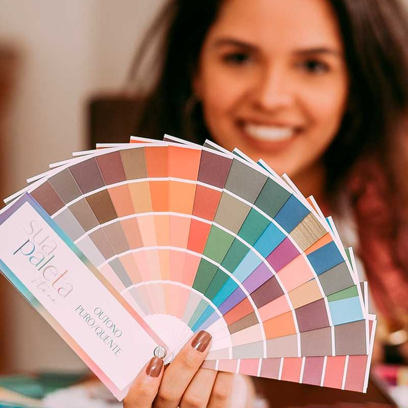
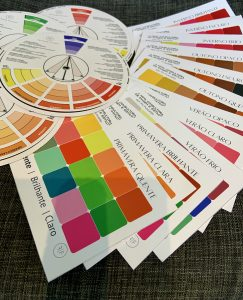
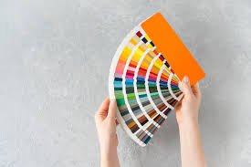
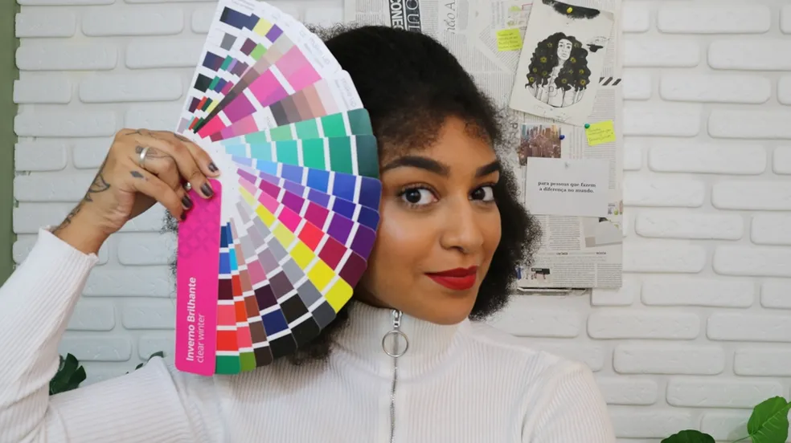

(502) 5513-5773
(502) 5513-5773
Coloración Personal
¡DESCUBRE LOS COLORES EN TU CARRITO Y VALORA TU BELLEZA NATURAL!
Consultoría Presencial
PRIMER PRINCIPIO DE LA CONSULTORÍA DE IMAGEN
¡Duplica quién eres y vuélvete más bella!
¡¿Alguna vez te has parado a pensar que todo en ti realza tu belleza?!
Exactamente lo que ocurre en Personal Coloring, un estudio en el que analizamos nuestros colores naturales, como la piel, los ojos y el cabello.
¿Recuerdas ese lápiz labial que a tu amiga le quedó hermoso pero a ti no? Esto tiene una explicación.
Eres hermosa pase lo que pase, pero siempre habrá ese día en el que luzcas deslumbrante. Está claro que algunos colores resaltan su belleza, mientras que otros no. Esto se aplica a tu ropa, cabello, accesorios y maquillaje. Y puedes encontrar esta explicación en coloración personal.
Conocer los colores que te favorecen te da mayor seguridad en tus elecciones. Tu carta de colores será una guía para compras más asertivas y para un armario funcional donde combinen todas las piezas.
Metodología de colorimetría
LA PRUEBA ES PRESENCIAL Y UNO DE NUESTROS CONSULTANTES IRA AL LUGAR QUE ELIJAS.



Preguntas o inquietudes frecuentes sobre la coloración personal:
1. ¿Qué es la coloración personal o el análisis del color?
La coloración personal o análisis de color es un servicio de asesoría de imagen, en el que conoceremos los colores que más valoran, que más realzan la belleza natural de nuestra clienta. Ayudándole a tomar decisiones más asertivas y seguras. En esta consultoría analizaremos la temperatura, intensidad y profundidad de la piel, ojos y cabello (cuando sea natural) para determinar los colores que mejor armonicen con este cliente.
2. Cómo descubrir mi carta de colores:
Para descubrir su paleta de colores, es necesario realizar un análisis de color o una coloración personal. Todo lo que tienes que hacer es elegir un consultor de tu preferencia. Inicialmente, la consultora realizará una clase de color, en la que explicará la técnica utilizada en la coloración, la psicología de los colores y cómo combinar colores de una manera más segura y asertiva. Después realizará una prueba de color personal y finalmente la asesora te entregará la carta de colores y te explicará cómo puedes utilizar todos estos colores, en tu ropa, cabello, maquillaje e incluso accesorios. Además de explicarte cómo utilizar los colores que te encantan y que no están en tu paleta.
3. ¿Cuáles son las cartas de colores?
El método estacional ampliado es el que utilizamos aquí en Resolva Meu Look, tenemos 12 cartas de colores con sus respectivas características principales que cariñosamente llamamos claro, oscuro, suave, brillante, cálido y frío. En otras palabras: invierno frío, invierno oscuro e invierno brillante. Primavera cálida, primavera clara y primavera brillante. Verano brillante, verano suave y verano frío. Otoño cálido, otoño oscuro y otoño suave.
4. ¿Puedo realizar el examen solo?
Si bien actualmente encontramos pruebas de análisis de color en línea o en libros, es muy recomendable que el análisis sea realizado por un profesional calificado, quien podrá identificar matices y realizar ajustes precisos para determinar los colores que más realzan tu apariencia de una manera más asertiva.
5. Cómo saber mis principales características:
Durante el proceso de coloración personal, la Consultora le explicará sus principales características: es decir, si luce mejor en colores claros u oscuros (profundidad), en colores intensos o suaves (intensidad), en colores cálidos, fríos o neutros (temperatura). Estas son las características que realzarán tu belleza natural (cuando se usan correctamente) para que te sientas más segura a la hora de adquirir el maquillaje ideal. ¿Alguna vez te ha encantado el lápiz labial de una amiga y cuando lo compraste no te gustó, probablemente porque las características de tu piel y en consecuencia tu paleta de colores no son las mismas que las de tu amiga? Ahora no volverás a cometer ese error.
